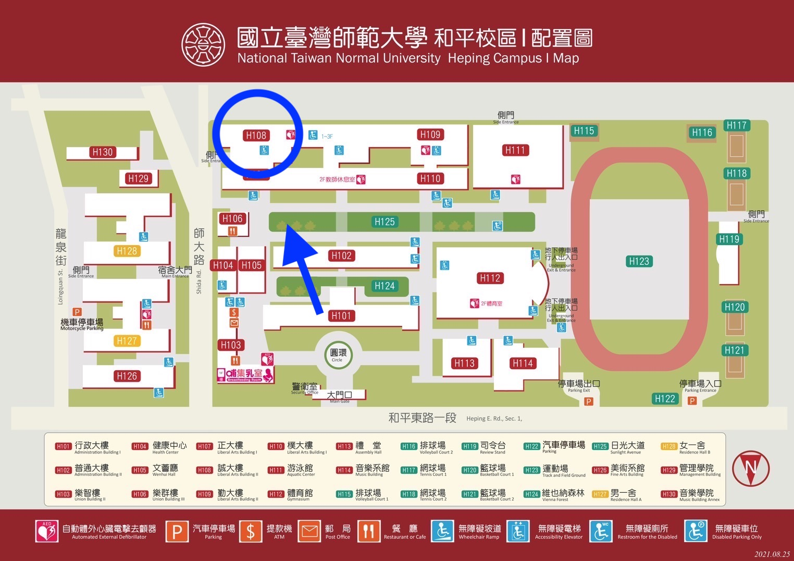

112年5月28日（日）13:00～17:45
子主題一
【原色：畫上你的心顏色】
原色，是指無法透過其他顏色混合而得到的顏色，又稱為「原始色」、「基本色」，是色彩混合等概念的基礎。 如果用「原色」來比喻個人，象徵著我們每個人起初都帶有各自獨一無二的色彩，在經過家庭、學校、社會等環境的影響下，不斷地跟周遭的人、事、物碰撞，無形之中改變也塑造出了自己的新顏色。 也就是說，我們都有自己的原始色，但可以透過不同的人生經歷與選擇，來去塑造出新的自我樣貌。 我們將調色盤中的「原色」概念應用於「科技與人文：元宇宙」議題的包裝，元宇宙是一個全新而未知的領域，無法預知他能企及的未來，人們在虛與實之中，用科技與人文交織出超越以往的新世界，像是將很多舊有的概念、知識和事物下了新的定義，看似前景充滿美好的想像，正等待著人們畫上顏色... 參與年會的觀眾們，如果要用一種顏色來代表或比喻自己，你們會選擇哪種顏色呢？如果現在還沒有答案也沒關係，相信聽完這場演講的你們，一定能有所啟發與收穫，並能為自己畫上五彩繽紛的「心」顏色！
子主題二
【明度：明亮度由你選擇】
明度，是指色彩的明暗程度，明度高，代表色彩明亮；而明度低，則是指色彩灰暗。 明亮與陰暗的兩極，就像人們對外的保護色，也像我們時而高昂、時而低落的情緒狀態，我們將「明度」與「社群媒體：焦慮」做結合。 在社群媒體上那些光鮮亮麗的貼文與照片，象徵一種明度高的顏色，完美的無懈可擊，引發某種比較心理與焦慮，但其實沒了光的照射，他們也就跟普通的東西別無兩樣；而那些自己覺得不夠出色亮眼的表現與經歷，抑或是有很多缺點和焦慮的自己，都一定存在著獨一無二的發光點，端看你從哪種角度和心態去看待。 明亮與灰暗的色彩沒有優缺之分，人人各有所好，我們希望來聽這場講座的觀眾們，能夠找到自己心中的那盞燈，自由轉換調整自己的保護色，在社群媒體與現實世界不同的「明度」之間，擁有泰然自若的處世與自處態度。
子主題三
【彩度：如果你想再調色】
彩度，是指色彩的鮮豔程度，也可以比喻成精彩程度，若將彩度與「職涯發展：斜槓」來做結合，則彩度高表示擁有越多斜槓、生活也越精彩豐富；然而，彩度高也可能造成眼花撩亂、迷失方向等窘境。 此外，在憂慮「科系畢業出路與限制」的狀況下，多數人不敢踏出嘗試新領域的那一步、不知道有何領域可以跨足、更不曉得如何結合兩項專業領域並維持平衡。 因此，我們希望能透過講者們對於斜槓人生的經歷，提供大學生們更多不同的視角與見解，讓我們能夠在這個人人追求斜槓的世代中，找到彩度在生活、職涯中的平衡，並用顏色創造出更多更好的作品。 來參與年會的觀眾們，是否曾擔心過你想為職涯塗上的色彩不夠亮麗？是否擔心手邊的顏料不夠充足？或擔心兩種風格的顏色不夠和諧、無法相容？ 那就來參加TEDxNTNU 2023 年會【調色盤 Color Palette】吧！ 我們為你準備了可任由你發揮的白紙和調色盤，在七位講者發表精采演說的同時，你可以利用現場提供的道具，盡情把你想要塗上的顏色全都付諸一試，你會明白其實你的潛力不可一世，只需要你的孤注一擲！
年會資訊
＊時間
＊地點
國立臺灣師範大學校本部 誠101
(台北市大安區和平東路一段162號)
